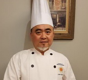

S i m p l e R e s t a u r a n t.
主廚 周展一
經歷：法國米其林二星餐廳 SoHard Restaurant 主廚
榮譽：
2013～2019年領導台灣廚藝團隊獲得一次巴魯斯世界烹飪大賽亞太區世界第二
2013年馬來西亞國際養生烹飪大賽-團體組金牌
2015年北京食神爭霸國際比賽—冷盤組（金牌獎)
『我很喜歡挑戰，因為能夠從過程獲得新想法，更透過料理食物的手段，傳遞食材的資訊』。

副主廚 黃偉祥
經歷：中國美食文化餐廳 Chino food Restaurant 主廚
榮譽：
1995年 代表美麗華大飯店參加「台北中華美食展」蔬果雕刻展示比賽榮獲最佳菜餚刀工獎
2003年 全國「可果美美極創意菜」烹調比賽美極金牌獎
『要做一個合格的廚師必須做到多看，多學，多思，多問，多記，多做』。
經理 陳振威
經歷：
2005創立個人品牌
2011受邀參加中華美食文化國際高峰論壇
主任 林建祥
經歷：
2017年民視做點心用點心電視節目拍攝
2017年日本山梨縣國際烹飪大賽-國際評審並受頒金廚獎
2015年優良廚師 FDA 金帽獎
資訊長 林震揆
經歷： 國立高雄師範大學工業科技教育碩士
國立高雄師範大學工業科技教育博士候選人
榮譽：
2010年IROC國際奧林匹克機器人大賽全國第一、二、三名，代表國家參加北京主辦國際奧林匹克機器人大賽
2011年代表國家參加韓國主辦IROC國際奧林匹克機器人大賽榮獲世界銅牌
2013年WRO國際奧林匹克機器人大賽全國競賽第二名，代表國家參加中國主辦WRO國際奧林匹克機器人大賽榮獲世界金牌、銀牌
home page